Нормальний розподіл
Розглянемо
спеціальний клас неперервного імовірнісного розподілу
відомого як нормальний розподіл.
Нормальний розподіл, без сумніву, є
найбільш важливим серед всіх імовірнісних
розподілів. Наприклад, зріст людей певної сукупності або вага новонароджених є випадковими величинами, які вважаються
нормально розподіленими.
Випадкову величину X називають розподіленою нормально,
якщо її диференціальна функція розподілу має вигляд
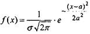
(31)
де а та
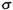
- параметри нормального розподілу.
Графік цієї функції називають нормальною кривою або кривою Гаусса (див. Рис. 5)
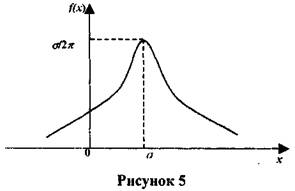
Нормааьна крива (і відповідно
нормальний розподіл) повністю визначаються двома параметрами: математичним сподіванням
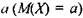
та середньоквадратичним відхиленням
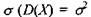
і
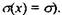
На рисунку 6
зображено графіки двох нормальних розподілів з різними математичними
сподіваннями
 але з
однаковим
але з
однаковим
середньоквадратичним
відхиленням.
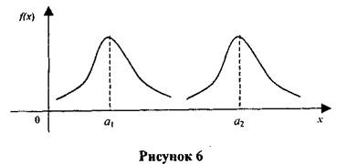
На рисунку 7
зображено графіки двох нормальних розподілів з однаковими математичними сподіваннями, але з різними середньоквадратичними
відхиленнями
1 та
2
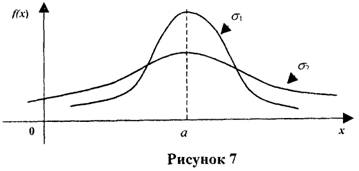
Взагалі,
математичне сподівання а нормального
розподілу визначає центр симетрії кривої, тоді як середнє
квадратичне відхилення
нормального розподілу характеризує степінь витягнутості нормальної кривої.
Зауважимо, що існує безліч нормальних кривих, які відповідають різним значенням
параметрів
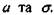
Однак, будь-яка нормальна крива може бути легко трансформована в іншу нормальну криву з
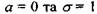
. Таку нормальну криву називають
нормованою, її
рівнянням буде
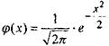
(32),
тобто це є функція
Лапласа.
Зауваження.
Локальна функція Лапласа має вигляд
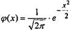
Локальна функція
Лапласа має такі властивості: 1)
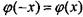
2)
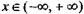
З) Якщо
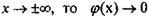
4)
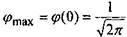
5)
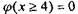
Значення функції
Лапласа дано у статистичних таблицях.
Можна показати, що якщо
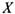
- нормально розподілена випадкова величина з математичним сподіванням
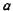
і середньоквадратичним відхиленням
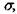
то вона може бути трансформована до
нормованої за допомогою заміни змінної
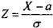
(33)
Згідно заміни (33)
числа
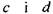
трансформуються у числа
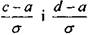
відповідно (див. Рис. 8). Більш того, перетворення
не змінює величину площі, тобто
площа області, обмежена графіком нормальної
кривої та прямими
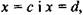
дорівнює
площі області,
обмеженої
графіком нормованої кривої і прямими
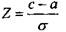
та
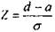
Таким чином, за
допомогою перетворення (33) обчислення ймовірностей,
що асоціюється з будь-яким нормальним розподілом, може бути
зведено до обчислення площі області, обмеженої нормованою кривою (див. Рис. 8).
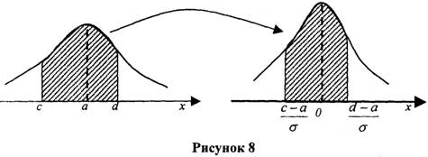
Ймовірність влучення в інтервал
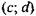
нормально
розподіленої
випадкової
величини знаходять за формулою
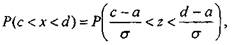
(34)
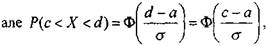
(35),
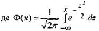
(36)
інтегральна функція Лапласа.
Зауваження. Інтегральна функція Лапласа
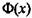
має
такі особливості 1)
 Значення функції Лапласа
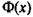
задано в статистичних таблицях. Приклад 8. Нехай
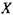
-
нормально розподілена випадкова величина з
Значення функції Лапласа
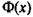
задано в статистичних таблицях. Приклад 8. Нехай
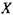
-
нормально розподілена випадкова величина з
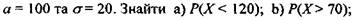
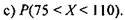
Розв'язання, а) Маємо
 Згідно формули
(35) і таблиці значень Ф(х) отримуємо
Згідно формули
(35) і таблиці значень Ф(х) отримуємо
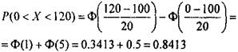
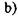
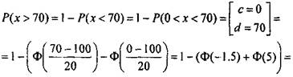
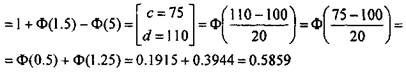
Приклад 9. Задано нормально розподілену величину
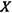
з
математичним сподіванням
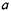
та середньоквадратичним відхиленням
 Знайти
ймовірність, що
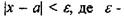
граничне відхилення
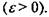
Знайти
ймовірність, що
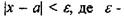
граничне відхилення
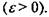
Розв'язання. Маємо
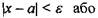
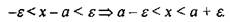
Згідно (35)
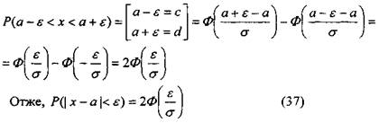